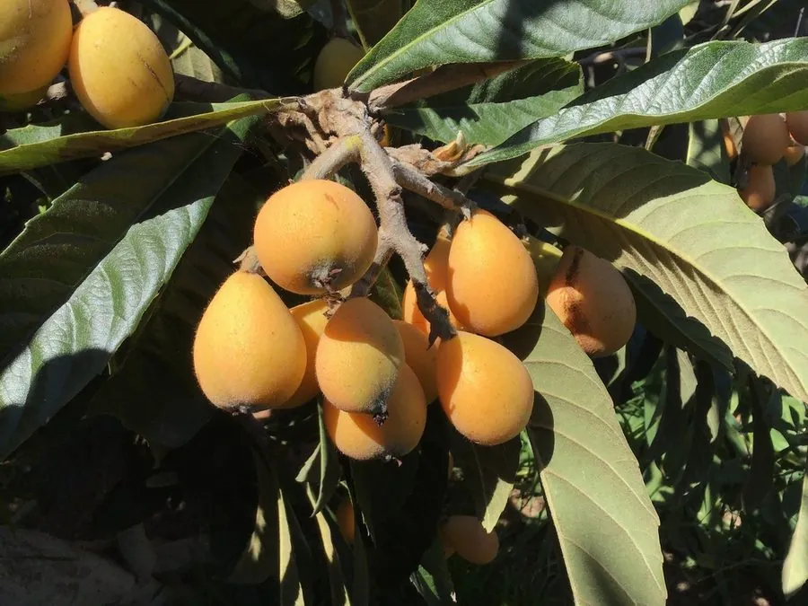

乔木 · 植物界
枇杷 Eriobotrya japonica

中国南方常见的常绿小乔木，秋冬开花、初夏果熟，果实金黄酸甜，叶片可入药，是著名的南方果树。
- 分类
- 门被子植物门纲木兰纲目蔷薇目科蔷薇科属枇杷属
- 栖息环境
- 海拔 1000 米以下的山坡、村旁与庭院，喜光喜温暖湿润
- 地理分布
- 中国四川、湖北一带原产，长江流域以南广泛栽培，日本、东南亚也有分布
- 保护级别
- 暂无评估；中国未列入国家重点保护野生植物名录
物种志
枇杷为常绿小乔木，高可达 10 m，树皮灰褐色，小枝密被锈色绒毛；叶片互生，倒卵形至长椭圆形，厚革质，表面深绿、背面密被锈色绒毛，边缘具锯齿。花期 10–12 月，圆锥花序顶生，花白色、芳香；果实为梨果，球形或卵圆形，成熟时橙黄色，果肉多汁、酸甜。
枇杷原产中国四川、湖北一带，中国长江流域以南广泛栽培，也见于日本、东南亚，喜光、喜温暖湿润，适宜深厚肥沃、排水良好的土壤。秋冬开花、初夏果熟，是南方重要的时令水果；果实可鲜食或制罐头、果酱与果酒；叶片入药，中药“枇杷叶”能清肺止咳，是枇杷膏的主要原料。枇杷树形优美、四季常青，也是庭院与公园的观赏树种。
形态与习性
- 株高可达 10 m，小枝密被绒毛
- 花期10–12 月，花白色芳香
- 果期5–6 月，梨果橙黄色
- 光照喜光，不耐长期荫蔽
- 土壤深厚肥沃、排水良好的壤土
- 主要用途鲜食与罐头果酱、枇杷叶入药、庭院观赏
趣味知识
- 枇杷秋冬开花、初夏果熟，是南方少见的花果跨季果树。
- 枇杷叶是中药“枇杷叶”，能清肺止咳，是枇杷膏的主要原料。
- 枇杷叶片背面密被锈色绒毛，正面深绿，是辨认它的特征。